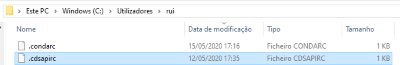

Prerequisites to download ERA5 data through CDS API¶
1 - Install the CDS API and xarray packages¶
In Anaconda Prompt execute the following commands:
conda config --add channels conda-forge conda install cdsapi conda install xarray dask netCDF4 bottleneck
2 - Install the CDS API key¶
Log in CDS (https://cds.climate.copernicus.eu/user/login)
Go to https://ads.atmosphere.copernicus.eu/api-how-to and create a file “.cdsapirc” using the two lines of code displayed in the webpage. The file should be located in C:/Users/username/ for example in “C:/Users/rui”.
Note
in non english systems the folder name can be displayed in a diferent way (see figure)
